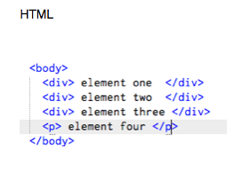
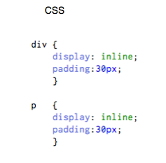
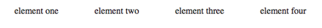
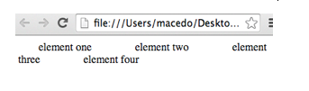
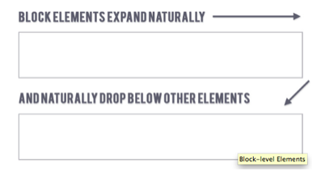
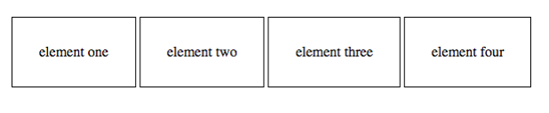

CSS Design
november 9,2014
Hi and welcome! The goal of this blog is to provide an explanation of what inline, block and inline-block style are. They might be confusing at first but hopefully after you read this small blog it will all make sense. By the way, I will also provide great sources for you to read!
Inline Display:
- Flow of one element after the other
- Will not clear previous contents to drop to the next line
- Will ignore top and bottom margin and any padding
- Will ignore width and height properties
Let me demonstrate, will create 3 divs and one paragraph and add padding of 30 px.


Browser

Take aways: Respects margin and padding, flows one element after the other
Browser Resized

Take aways: Will ignore top and bottom margin and any padding
Block Display:
- When no width is set, element will expand naturally
- When no height is set, element will expand naturally to fit its child element
- Can have margins and padding

Source: http://www.impressivewebs.com/difference-block-inline-css/
Inline-Block Display:
Inline-Block is a combination of both, it is placed as an inline element, next to content but will behave as a block. In other words the inside will be formatted as a block but the element will behave as inline.
Browser

That is all for now! Hope this was useful!
Andy-dev —OVER AND OUT
Sources--Highly recommended for additional information
http://www.impressivewebs.com/difference-block-inline-css/
"http://stackoverflow.com/questions/9189810/css-display-inline-vs-inline-block"
"http://www.w3schools.com"